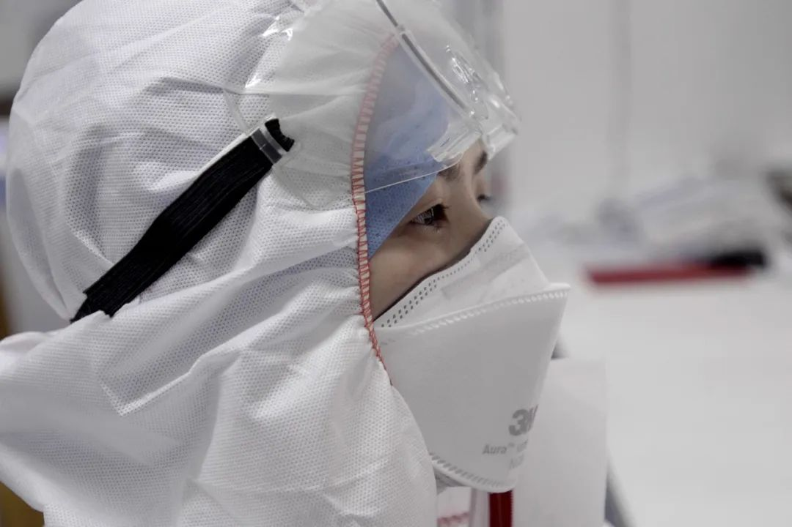
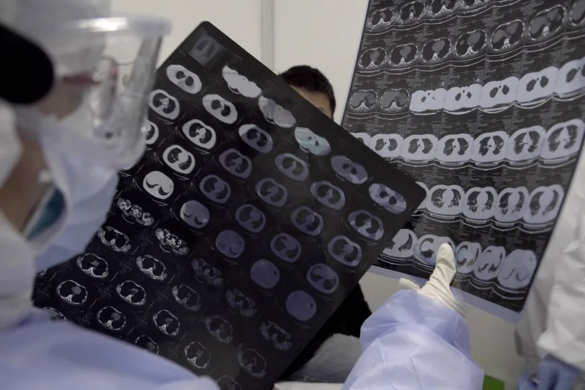
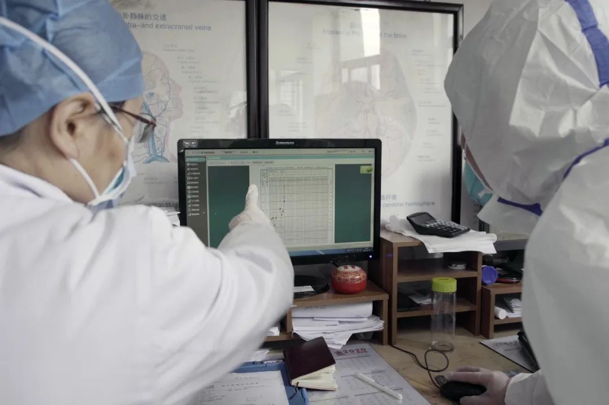
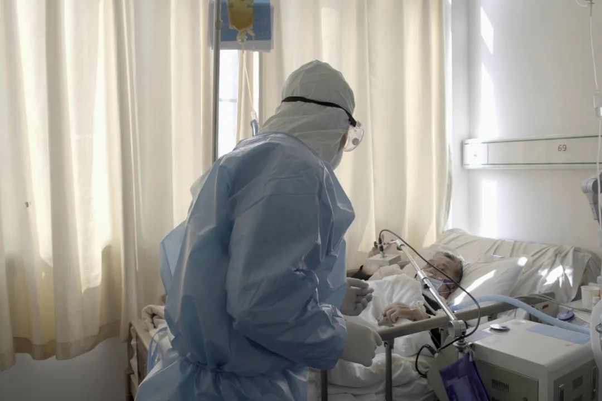
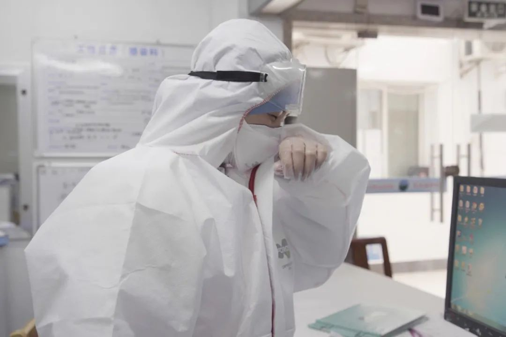
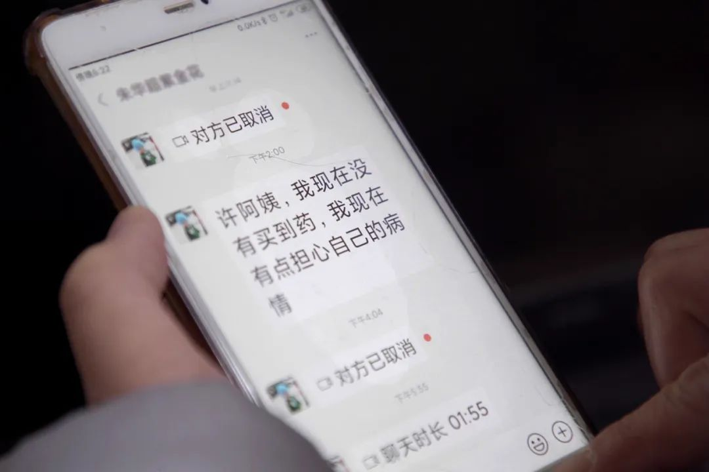
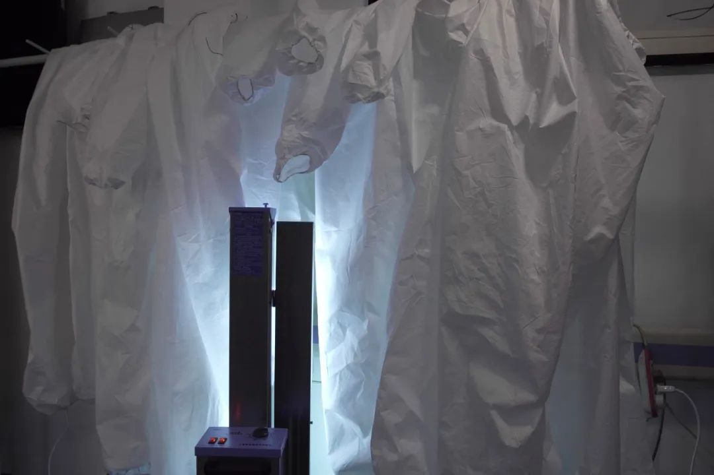
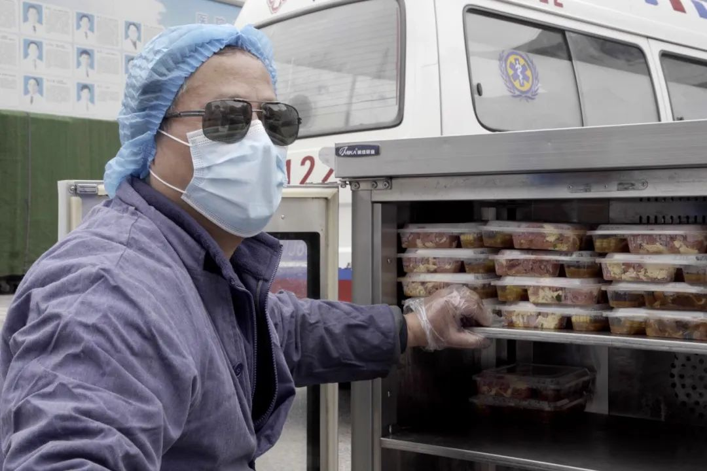

作家方方：疫情看上去稳定，但人心似不太稳（57）-作家方方-财新博客-新世纪的常识传播者-财新网
原文链接 备份链接 3月21日。 封城第59天。这么长时间了！ 昨天那么大的太阳，今天突然就阴了。下午还下了点雨。这时节的春雨，对于院子里的树以及花，都还是很需要的。前两三天，武大樱花盛开，树下空荡无人，估计是记者拍了一些照片，同学群里便 …


图、文 丨 雷钊
编辑 丨 林鹏 吕萌
武汉长江航运总医院（下文简称长航医院）感染科的医生许绿叶再过一年多就要退休，新型冠状病毒肺炎疫情扩大后，她临危受命成为医院专家组组长。今年59岁的她，曾担任感染科主任，参加过多起公共事件的医疗救援工作：1998年抗洪救灾、2003年“非典”疫情防控、2009年甲型H1N1流感防控等。“2008年汶川地震，临行前一天急性阑尾炎发作，没有去成。”
被征用为新冠肺炎定点医院之后，长航医院不再收治非新冠肺炎患者。2月19日，长航医院要收治来自武汉江岸区的六十个病人，为了合理救治病人，按照分层管理分层收治的原则，依据病情轻重，这些病人分别被送到icu病房、呼吸科、感染科及其他内科。轻症患者送到其他科室，经过短期培训和学习的其他科室医生，在这里承担着收治轻症患者的任务。

2020年2月19日，许绿叶在为新冠肺炎患者体检，患者情况在转好，但左下肺部还有一点啰音。

2020年2月19日，许绿叶在看病人最新的ct片，并与之前的ct片做对比。
许绿叶所在的感染科，一共有36个床位，这段时间一直是满着的。“一批病人出院，又会有一批病人进来。”科室的医生很难记住每个病人的名字，但是说起哪个床位，什么症状，病情处在什么阶段，他们非常清楚。尽管医生们明白，出于安全考虑，应尽量减少与病人接触的时间和频次，但为了让病人建立信心，查房之余，她们也会额外花时间与病人交流，进行心理疏导。一家三口住在同一个科室但不能见面（阳性和阴性患者要分开住院），医生们也会给每个人传递亲人恢复的状态，让他们安心。

2020年2月19日，一位正在恢复过程中的高敏体质病人，他的儿子住在隔壁病房，同样处在恢复期，他很关心儿子的状况。医生在为他汇报儿子的病情，免去他的担心。

许绿叶和专家组副组长、呼吸科的主任杜鹏在讨论分析一位新冠肺炎疑似患者的情况。

杜鹏是许绿叶从2009年甲型H1N1流感防控时期就开始合作的“战友”。图为2020年2月22日，医院专家组副组长，呼吸科主任杜鹏在重症病区查房。
新冠肺炎疫情初期，医生们面临着前所未有的压力。负责给病人分发配送药物的护士晓燕记得，忙的时候“一口热饭都吃不上。”与家人的分离和彼此的牵挂，更是一线医护人员的软肋。晓燕三岁的女儿很久没见妈妈，每日收拾整齐自己的东西，等妈妈来接她。这让晓燕有些哽咽。

负责给病人分发配送药物的晓燕。

晓燕的女儿三岁，很久没见到妈妈，每日收拾整齐自己的东西，等待着晓燕回来。说到女儿，晓燕的眼泪在眼眶里打转。出于安全考虑，她也不敢擦。
而疫情扩大之后，所有医护人员都尽力避免与家人、朋友接触，这是抗击疫情的需要，也是对家人、朋友负责任的做法。许绿叶的父母均80多岁，每隔一两周，她开车给父母送一些必需品和药品，“隔着铁门和他们说说话”。父母表现出了前所未有的理解，这让许绿叶心里有点不是滋味，“我忘了爸爸初一的生日，他居然没有发脾气”。2月19日值夜班的医生白志刚，大年三十那天当了爸爸。妻子生产时他完成了手术签字，见到母女平安，就返回一线岗位，没有休息一天。那天之后，疫情扩大，产妇及新生儿体弱，出于隔离的需要，他就再也没能抱抱自己的宝宝。

白医生通过视频连线看着自己出生仅二十天的宝宝。由于产妇和新生儿抵抗力都比较低，出于安全考虑，白医生在大年三十孩子出生之后一直都没有回家。

傍晚，下班路上的许绿叶。

回到医院附近的定点酒店，许绿叶要回复很多白天来不及回复的消息，有求助，也有关于疾病治疗的方案讨论。

许绿叶在回复一位病人的求助微信。
许绿叶说，现在开放的床位越来越多，在一线的同事也越来越多。在前期的工作中也积累了一些经验，形成有规律可循的治疗方案后，医生不再没日没夜地工作。配套资源的跟进，爱心人士捐赠的物资和食物，也帮助他们解决了许多实际问题，但防护物资仍旧稀缺。口罩和防护服是最稀缺的两种资源，为了节省物资，他们的防护服得穿一天。他们有时会将防护服和护目镜用紫外线消毒后重复使用。

苦中作乐的小玩笑，也是分清防护服归属的记号。

口罩和防护服依然是稀缺的资源，为了节省物资，医生们会将少部分受到污染程度较小的防护服和用紫外线消毒后重复使用。图为在用紫外线消毒的防护服。
许绿叶早期也出现过一些疑似症状，进行了一些针对性治疗，后来她的核酸检测均呈阴性。由于工作压力大，她现在每天晚上都要吃一片安定，保证睡眠提高免疫力。“感染科其实是个半军事化的科室，不管什么疫情到来，感染科的医生都是第一线的。”

武汉“封城”之后，理发店全部关门不再营业，医护人员理发成了一个难题。图为为医护人员理发的志愿者，当天共有四位志愿者来到医院为医护人员义务理发。

在为医务人员和病人备餐的后勤工作人员，当天的午餐来自爱心人士的捐赠。
“面对疫情，肯定或多或少会有一些害怕，但这是医生的职责”，许绿叶说，“但我记得我上学的第一天，老师讲，从今天开始，你就要秉持救死扶伤的精神，把自己全身心地交给医学事业，这是我记得很清楚的。”

许绿叶毕业于湖北医学院（现武汉大学医学部）。图为许绿叶展示武汉大学79级入学40周年校友会时的照片，她的同学当中也有人正在疫情一线。

在清洁区摘下口罩的许绿叶。
后台回复”读者群”, 加入更多讨论

小昼
长按二维码向我转账
受苹果公司新规定影响，微信 iOS 版的赞赏功能被关闭，可通过二维码转账支持公众号。
原文链接 备份链接 3月21日。 封城第59天。这么长时间了！ 昨天那么大的太阳，今天突然就阴了。下午还下了点雨。这时节的春雨，对于院子里的树以及花，都还是很需要的。前两三天，武大樱花盛开，树下空荡无人，估计是记者拍了一些照片，同学群里便 …
原文链接 备份链接 - 这是 新世相 的第1201 篇文章 - Sayings: 两周前，我曾问：你见过凌晨四点的武汉吗，是什么样？ 之后，我们收到了接近 2000 个人的讲述，包括 150多个在武汉的人。他们的故事，构成了今天这条推送的 …
原文链接 备份链接 国内疫情形势逐渐好转，在线医疗机构们到底能否经受住“后疫情时代”的挑战？ 文 | 徐徜徉 编辑 | 朱弢 空格 2020年初，一场新冠肺炎疫情将医疗行业推向了“风口浪尖”。 在湖北及全国各地的医院内，数万名医务人员奋战 …
原文链接 备份链接 我一度后悔自己离开了医生这个职业，他们那么缺人，我却不能跟他们一起冲上去。难过、绝望、内疚…… 口述 | 冯 翔**** 整理 | 陈 冰 …… 冬天腊梅花， 夏天石榴花， 晴天都是人， 雨天都是伢。 过路的看风景， …
原文链接 备份链接 据2月26日韩国中央防疫的通报， 韩国新冠肺炎确诊病例总数达到1261例， 死亡12例。 在短短不到一周内，韩国新冠疫情井喷式爆发， 在疫情最严峻的大邱市， 当地民众排千米长队买口罩。 回头看5年前， 2015年5月 …